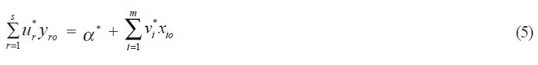

where ijo x is the ith input and rjo y is the rth output of the o j th bank (observation) under evaluation.
If θ * = 1, then the o j th bank is located on the frontier (or efficient). Otherwise if θ * < 1, then the o j th bank is inefficient. Model (2) is called input-oriented DEA model where the goal is to minimize input usage while keeping the outputs at their current levels. Similarly, we can have an output-oriented DEA model where the goal is to maximize the output production while keeping the inputs at their current levels.
Both models (2) and (3) identify the same efficient frontier, because θ * = 1 if and only if φ * = 1. To further illustrate the DEA methodology, we consider dual program of model (3)
Subject to (4)
Let
Then the model (4) seeks to determine the relative efficiency of each bank. It is clear from the model (4) that smaller value of * o h is preferred since we prefer larger values of yro and smaller values of xio . Therefore, model (4) tries to find a set of weights vi and ur so that the ratio of aggregated xio to aggregated yro reaches the minimum. Note that model (4) is solved for each bank. Therefore, model (4) does not seek the average best performance, but the efficient or best performance achievable by a proper set of optimized weights.
Note that when * o h = 1, we have

where (*) represents the optimal values in model (4). It can be seen that (5) is similar to the regression model with α* the intercept on the y-axis. The implicit difference between model (4) and the regression model lies in the fact that (i) model (4) deals with more than one dependent variables ( yrj ) at the same time, and (ii) equation (5) is obtained for each bank with a score of one. Further, (5) represents the efficient frontier. Since different units with score of one in model (4) may not be on the same frontier, the resulting efficient frontier is a piecewise linear one, as shown in Figure 1.
From the above discussion, we can see that DEA can be an excellent data-mining approach with respect to extracting efficiency information from the performance data.
Consider three two-stage bank operations as presented in Table 1, where the first stage has two inputs (IT investment and labor) and one output (deposit), and the second stage has one input (deposit generated from the first stage) and one output (profit) (see, e.g., Figure 2).
Applying model (2) to the two stages indicates that the banks A and B in the first stage, and bank C in the second stage are efficient. Now, if we ignore the intermediate measure of deposit and apply model (2), the last column of Table 1 indicates that all banks are efficient.
This simple numerical example indicates that the conventional DEA fails to correctly characterize the performance of two-stage operations, since an overall DEA efficient performance does not necessarily indicate efficient performance in individual component. Consequently, improvement to the best practice can be distorted, i.e., the performance improvement of one stage affects the efficiency status of the other because of the presence
Table 1: Numerical example
of intermediate measures. In the next section, we present a DEA model that can directly evaluate the performance of two-stage operations, and set performance targets for intermediate measures.
Consider the indirect impact of IT on banking performance where IT directly impacts certain intermediate measures which in turn are transformed to realize banking performance. Figure 2 describes the indirect impact of IT on banking performance where the first stage use inputs xi (i =1, …, m) to produce outputs zd ( d = 1, …, D), and then these zd are used as inputs in the second stage to produce outputs yr (r = 1, …, s). It can be seen that zd (intermediate measures) are outputs in stage 1 and inputs in stage 2. The first stage is viewed as an IT-related, value-added activity where deposit is generated and then used as the input to the second stage where revenue is generated.
Figure 2: IT impact on banking performance.
Based upon Chen and Zhu (2001), we have
where w1 and w2 are user-specified weights reflecting the preference over the two stages’ performance, and symbol “~” represents unknown decision variables.
The rationale of model (6) is as follows: (i) when we evaluate the impact of IT investment on the intermediate measures, we want to minimize the input usage given the intermediate measures. For example, given the deposits generated, our objective is to examine whether a bank can reduce its input consumption (including IT investment) compared to the best practice, and (ii) when we evaluate bank performance as a result of the intermediate measures, we want to maximize the performance given the intermediate measures. For example, given the deposits it generated, our objective is to examine whether a bank can increase its profit. Model (6) characterizes the indirect impact of IT on banking performance in a single linear programming problem.
[Proof]: Note that * jo λ = * jo μ = 1, α* = β * = 1, and ~* djo z = djo z are feasible solutions in model (6). This completes the proof. .
Theorem 2 If α* = β * = 1, then θ * = 1 and φ * = 1, where θ * and φ * are the optimal values to models (2) and (3), respectively.
[Proof]: Suppose α* = β * = 1 in model (6). By Theorem 1, we know that * jo λ = * jo μ = 1, α* = β * = 1, and ~* djo z = djo z . Now, if θ * < 1 and φ * > 1, then this indicates that α* = β * = 1 is not optimal in model (6). A contradiction.
Theorem 2 indicates if α* = β * = 1, the value-chain achieves efficient performance when the two-stage process is viewed as a whole.
If α* = 1 and β * > 1 (or α* < 1 and β * = 1), then model (6) indicates that one of the stages can achieve 100% efficiency given a set of optimal intermediate measures. In this case, the original DEA models (2) and (3) can be used to provide additional information.
From Theorem 2, we immediately have the following result:
Corollary A bank must be a frontier point in both stages with respect to ijo α *x (i = 1, …, m), ~* djo z (d = 1,…, D), and rjo β * y (r = 1, …, s), where (*) represents optimal value in model (6).
Based upon the above Corollary, model (6) yields directions for achieving the best practice of this two-stage process. Consequently, we can study the marginal impact of IT investment on banking performance by using returns to scale estimation discussed in Seiford and Zhu (1999) (see Chen & Zhu, 2001, for such a study).
In model (6), the intermediate measures for a specific bank under evaluation are set as unknown decision variables, djo z ~ . As a result, additional constraints can be imposed on the intermediate measures. This can further help in correctly characterizing the indirect impact of IT on banking performance.
Consider a set of 15 banks obtained from the Functional Cost and Profit Analysis data set collected by the Federal Reserve Bank under its Functional Cost Analysis (FCA) program. The data for this study is based on the FCA Plus data set from 1997. Table 2 presents the data. In the first stage, we have three inputs: Transactional IT investment, Strategic IT investment, and Labor expenses, and two outputs: number of Accounts and number of Transactions. In the second stage, we have two outputs: Revenue and Equity.
The IT investment measures are constructed using data from the following FCA defined expense categories: Vendor Data Processing (all expenses for data processing.